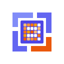

basicly writes the instruction files for Claude Code, Codex and Copilot from one catalog of rules. It adds git hooks that check every commit.
Use it when one or more coding agents work in your git repository. Every agent then follows the same rules and passes the same gates.
Install
Run this inside your git repository. On Linux, macOS or the Windows Subsystem for Linux (WSL):
$ curl -fsSL https://niksavis.github.io/basicly/install.sh | sh
On Windows (PowerShell):
> irm https://niksavis.github.io/basicly/install.ps1 | iex
You need git and uv. The script installs uv when it is missing, and uv
gets Python 3.14 or later. You also need Node.js and the
markdownlint-cli2 package in the repository, for the
markdown gate. Without them, install stops before it writes a file.
The script installs the latest release. To read the script before you
run it, or to pick a version, see the
install options.
.basicly/ folder. Run git status to review
them.
.basicly-local/, and an upgrade never changes them.
What you get
The catalog is a set of YAML files that hold the rules for your
agents. basicly writes them into the files each agent reads:
CLAUDE.md, AGENTS.md,
copilot-instructions.md, skills and subagents.
A gate is a check that refuses a commit when it fails. basicly runs the gates in git hooks and in agent hooks. Continuous integration (CI) runs them again.
The tracker stores records of work, their dependencies and the
result of each gate. It keeps them in a log in
.basicly/ledger/, which you commit with your code.
The loop command takes one record from creation to a
merged change. It builds each record in its own git worktree, a
second working copy of the repository. Another agent can continue
the work, because the loop reads the state from the tracker.
First use
Open your coding agent in the repository. It now reads the rules in its instruction file. Each commit needs a Conventional Commits subject and the id of a tracker record that you claimed.
The tutorial shows both on a test repository that you can delete. It sends no request to a paid AI model. Unblock a commit explains each refusal and its fix.
Install adds no basicly command to your
PATH. Add this function to your shell startup file, with
the version you installed:
basicly() { uvx --python '>=3.14' --from https://github.com/niksavis/basicly/releases/download/v0.44.1/basicly-0.44.1-py3-none-any.whl basicly "$@"; }
Kits
A kit is a part of basicly that installs without the rest. There are four kits. Each has no dependencies and needs Python 3.9 or later.
basicly-tracker: the tracker alone. Two
people or agents can add records at the same time, and git still
merges the log.
basicly-board: a web page and an HTTP
API for the tracker, on your own computer. It needs the tracker kit.
basicly-comments: a gate that refuses a
prose comment in a code file, and a tool that removes such comments
safely.
basicly-tier: a model tier
(low, medium, high,
maximum) that a subagent names instead of a model. The
kit maps each tier to a model.
$ uv tool install 'git+https://github.com/niksavis/basicly@v0.44.1#subdirectory=packages/basicly-tracker' $ basicly-tracker init
The kits reference gives the commands of the tracker, comments and tier kits. The board README gives the board's commands.
Learn more
basicly command and its flags